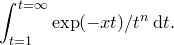

The styling section can contain any of the following settings in any order:
Arrow_HeadAngle |
Possible values: Any floating-point number. Sets the angle, in degrees, at which the two sides of arrow heads meet at its point. |
Arrow_HeadSize |
Possible values: Any floating-point number. Sets the size of all arrow heads. A value of 1.0 corresponds to PyXPlot’s default size. |
Arrow_HeadBackIndent |
Possible values: Any floating-point number. Sets the size of the indentation in the back of arrow heads. The default size is 0.2. Sensible values lie in the range 0 (no indentation) to 1 (the indentation extends the whole length of the arrow head). Less sensible values may be used by the aesthetically adventurous. |
Axes_LineWidth |
Possible values: Any floating-point number. Sets the line width used to draw graph axes. |
Axes_MajTickLen |
Possible values: Any floating-point number. Sets the length of major axis ticks. A value of 1.0 corresponds to PyXPlot’s default length of |
Axes_MinTickLen |
Possible values: Any floating-point number. Sets the length of minor axis ticks. A value of 1.0 corresponds to PyXPlot’s default length of |
Axes_Separation |
Possible values: Any floating-point number. Sets the separation between parallel axes on graphs, less the width of any text labels associated with the axes. A value of 1.0 corresponds to PyXPlot’s default spacing of ; other values differ from this multiplicatively. |
Axes_TextGap |
Possible values: Any floating-point number. Sets the separation between axes and the text labels which are associated with them. A value of 1.0 corresponds to PyXPlot’s default spacing of |
Grid_MajLineWidth |
Possible values: Any floating-point number. Sets the line width used to draw major gridlines (default |
Grid_MinLineWidth |
Possible values: Any floating-point number. Sets the line width used to draw minor gridlines (default |
Baseline_LineWidth |
Possible values: Any floating-point number. Sets the PostScript line width which corresponds to a linewidth of 1.0. A value of 1.0 corresponds to PyXPlot’s default line width of |
Baseline_PointSize |
Possible values: Any floating-point number. Sets the baseline point size which corresponds to a pointsize of 1.0. A value of 1.0 corresponds to PyXPlot’s default; other values differ from this multiplicatively. |
 ; other values differ from this multiplicatively.
; other values differ from this multiplicatively.  ; other values differ from this multiplicatively.
; other values differ from this multiplicatively.  ; other values differ from this multiplicatively.
; other values differ from this multiplicatively.  ).
).  ).
).  ; other values differ from this multiplicatively.
; other values differ from this multiplicatively.